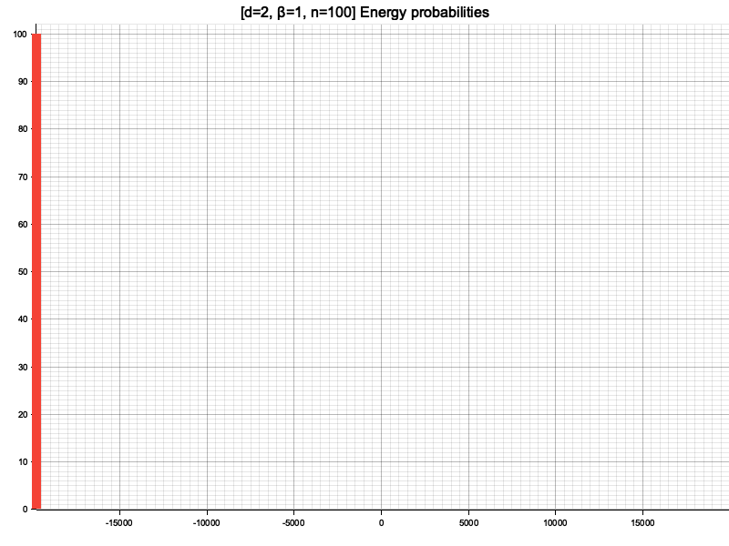
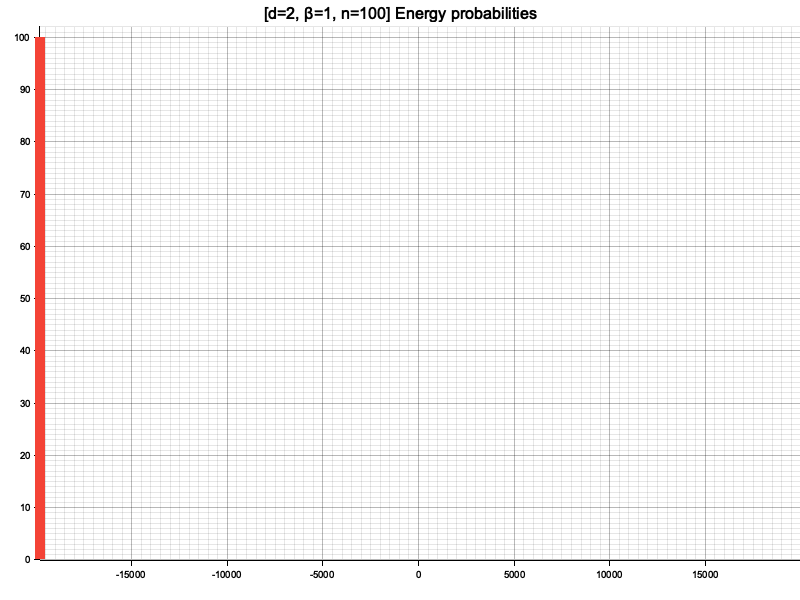

Modèle d’Ising
Principes et simulations
Iron filings, after being heated for a long time, are attracted by a loadstone, yet not so strongly or from so great a distance as when not heated. A loadstone loses some of its virtue by too great a heat; for its humour is set free, whence its peculiar nature is marred.
– De Magnete, William Gilbert, 1600
Aimantation spontanée, température de Curie
(Source : Lectures On Phase Transitions And The Renormalization Group, N. Goldenfeld)
Modèles d’Ising : Principes
(Source : https://arxiv.org/abs/1903.11554)
- Réseau de $n^d$ petits aimants $\sigma_i \in \lbrace -1, +1 \rbrace$
- Énergie $H = - \sum_{(ij)} J \sigma_i \sigma_j$
- Magnétisation $M = \sum_i \sigma_i$
- Statistique de Maxwell-Boltzmann
Distribution de Maxwell-Boltzmann (rappel)
- Système $\Sigma$ plongé dans un thermostat à température $T$ (ensemble canonique)
- $\mathbb{P}(\text{Micro-état de }\Sigma\text{ d’énergie H}) = \frac{\exp(-\beta H)}{Z}$
- $\beta \mathrel{\mathop:}= \frac{1}{k_B T} (\mathrel{\mathop:}= \frac{1}{k_B} \frac{\partial{S}}{\partial{E}})$
- $Z(\beta)$ facteur de normalisation (fonction de partition).
Interprétation
$\mathbb{P} = \frac{1}{Z} \exp(-\beta H)$
- Basse température : les micro-états (de $\Sigma$) minimisant $H$ sont très favorisés.
- Haute température : les micro-états tendent à être équiprobables
Cas haute température
Réseau 100x100, $\beta = 0.1$ (MCMC)

Cas basse température
Réseau 100x100, $\beta = 1$ (MCMC)

Comportement intermédiaire ?
En toute dimension $d$ :
- $M / N = \pm 1$ pour $T = 0$ ($\beta = + \infty$).
- $M / N = 0$ pour $T = + \infty$ ($\beta = 0$).
Questions : Quel comportement entre ces deux régimes, en dimension $d = 1, 2, 3, …$ ?
⇒ Simulations informatiques
Aspects algorithmiques
Deux principales difficultés pour les simulations :
- $2^N$ états ⇒ Simulations exactes pour $N$ petit, échantillonage pour $N$ grand.
- Calcul de $H$ en $O(N)$ ⇒ Astuce
Calcul de l’énergie (astuce)
- Partir d’un état connu (e.g. $\forall i, \sigma_i = +1$)
- Retourner un spin à la fois
- Variation d’énergie calculable en $O(1)$ (localité)
Simulations exactes par codage de Gray (réseau 4x4)


Pas de température critique !
Simulations sur grands réseaux
- Problématique : échantilloner les états selon la distribution $\mathbb{P}$ de Maxwell-Boltzmann
- Idée (MCMC) :
- Générer une promenade aléatoire sur l’espace des états
- Probabilités de transition bien choisies
- Concrètement : chaîne de Markov irréductible dont $\mathbb{P}$ est la distribution stationnaire
MCMC locale : principe
- Initialiser le réseau, puis répéter :
- Sélectionner un sommet au hasard
- Calculer la variation $\Delta H$ si on inverse ce spin
- Avec probabilité $\min(e^{-\beta \Delta H}, 1)$ :
- Inverser ce spin
- Mettre à jour énergie, magnétisation
- Enregistrer l’échantillon
MCMC locale (réseau 100x100)
 

- Convergence lente
- Brisure d’ergodicité / symétrie !
Algorithme de Wolff
Source : https://arxiv.org/abs/cond-mat/0311623
Méthode MCMC en cluster
Simulations par échantillonage de Wolff (réseau 100x100)


Transition pour $0.42 \leq \beta_C \leq 0.45$ !

Réseau 2500x2500 $\beta_C \approx 0.4407$
Rôle de la dimension
- En dimension $d$, un réseau a une valence $2d$ : dimension élevée favorise l’alignement
- En dimension $2$, $\beta_C = \frac{1}{2} \ln(1 + \sqrt{2}) \approx 0.4407$.
- Exercices
- $d = 3$ : Déterminer expérimentalement $\beta_C$.
- $d = 1$ : Vérifier et justifier l’absence de transition de phase ($\beta_C = +\infty$).
Ressources
- Cluster Monte Carlo algorithms, W. Krauth
https://arxiv.org/abs/cond-mat/0311623 - Statistical Mechanics: Algorithms and Computations, W. Krauth
http://www.lps.ens.fr/~krauth/index.php/SMAC - Promenade aléatoire, M. Benaïm, N. El Karoui
https://www.editions.polytechnique.fr/?afficherfiche=75
https://github.com/tchaumeny/RustIsing (simulateur)